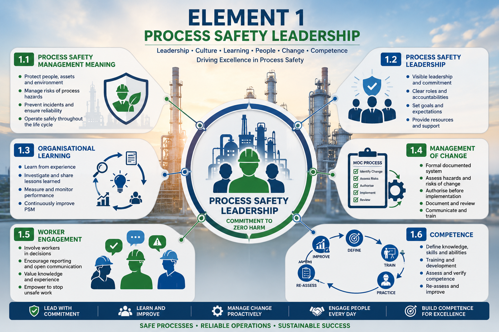
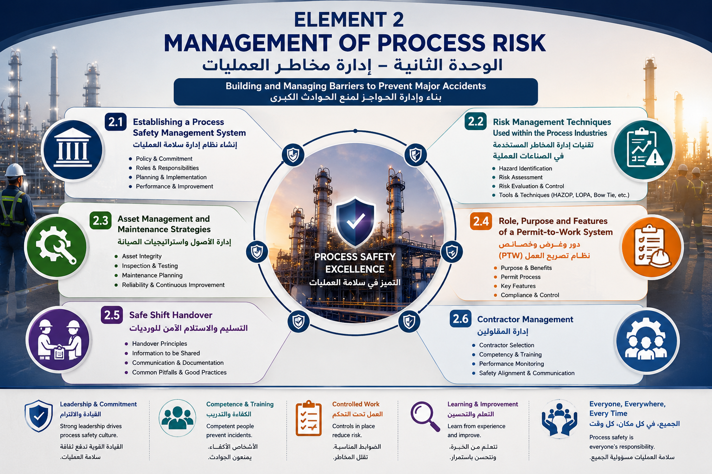

Candidate Information
Number of Questions: 40
Pass Mark: 80%
Timer: No time limit
Examination Result
🇬🇧 PSM ENGLISH
Select an element to study:
Reading Progress
0% Completed
🇸🇦 PSM ARABIC + TECHNICAL ENGLISH 🇬🇧
شرح عربي متكامل مع المحافظة على المصطلحات الفنية باللغة الإنجليزية.
Element 1 – Process Safety Leadership
الوحدة الأولى – قيادة سلامة العمليات

🎬 Case Study – Flixborough Chemical Explosion 1974
Management of Change (MOC) – Lessons from a Major Process Safety Disaster
Element 2 – Management of Process Risk
الوحدة الثانية – إدارة مخاطر العمليات

🎬 Case Study – Piper Alpha Disaster 1988
Management of Process Risk – Lessons from a Major Process Safety Disaster
Element 3 - Process Safety Hazard Control
الوحدة الثالثة - التحكم في مخاطر سلامة العمليات
محتوى الوحدة الثالثة قيد الإعداد
Element 4 - Fire and Explosion Protection
الوحدة الرابعة - الحماية من الحريق والانفجار
محتوى الوحدة الرابعة قيد الإعداد
📘 PSM Study Center
Study the selected Process Safety Management element.
Select an Element from the
The study content, topics and book references will appear here.